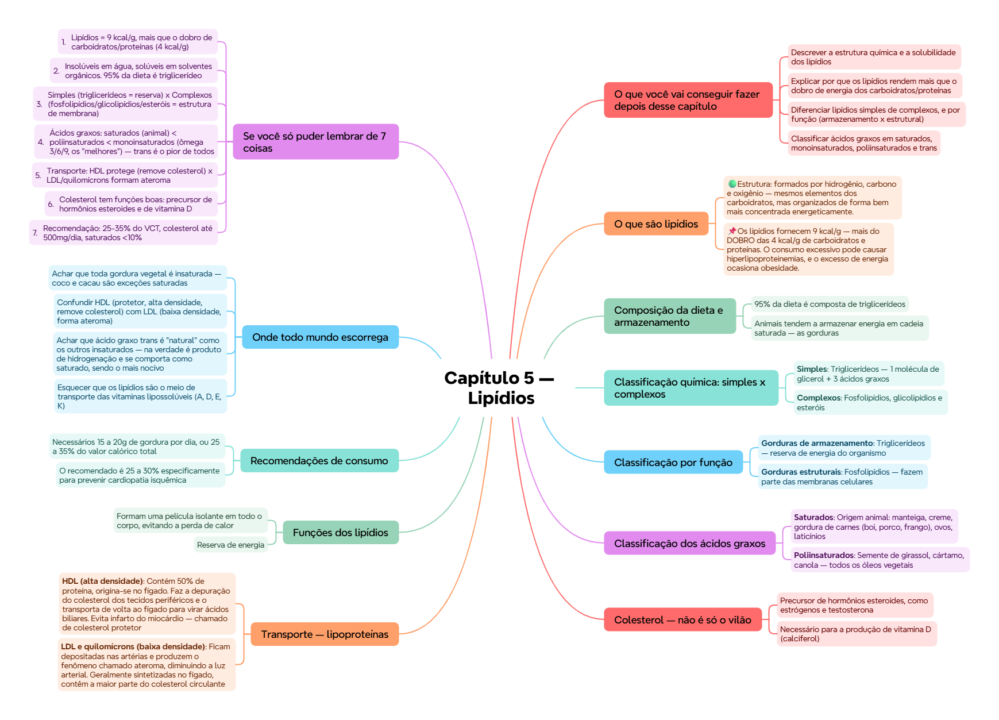

ClinicusMed · Dossiê Clinicus — Padrão de Excelência
Nv. 1
0 XP
🎯 O que você vai conseguir fazer depois desse capítulo
Descrever a estrutura química e a solubilidade dos lipídios
Explicar por que os lipídios rendem mais que o dobro de energia dos carboidratos/proteínas
Diferenciar lipídios simples de complexos, e por função (armazenamento x estrutural)
Classificar ácidos graxos em saturados, monoinsaturados, poliinsaturados e trans
Explicar o transporte de gorduras no sangue via lipoproteínas (HDL x LDL)
Reconhecer as funções do colesterol e as recomendações de consumo
🥑 O que são lipídios
Os lipídios (ou gorduras) têm uma composição química muito variável. São insolúveis em água e solúveis em solventes orgânicos, como éter, álcool e clorofórmio.
🟢 Estrutura: formados por hidrogênio, carbono e oxigênio — mesmos elementos dos carboidratos, mas organizados de forma bem mais concentrada energeticamente.
📌 Os lipídios fornecem 9 kcal/g — mais do DOBRO das 4 kcal/g de carboidratos e proteínas. O consumo excessivo pode causar hiperlipoproteinemias, e o excesso de energia ocasiona obesidade.
🧈 Composição da dieta e armazenamento
95% da dieta é composta de triglicerídeos
Animais tendem a armazenar energia em cadeia saturada — as gorduras
Plantas armazenam em forma insaturada — os óleos (exceção: coco e cacau, que são saturados apesar de serem vegetais)
💭 Pegadinha clássica: nem toda gordura vegetal é insaturada — coco e cacau são as exceções que a prova adora cobrar.
🔬 Classificação química: simples x complexos
Tipo
Composição
Onde atuam / fontes
Simples
Triglicerídeos — 1 molécula de glicerol + 3 ácidos graxos
Reserva energética
Complexos
Fosfolipídios, glicolipídios e esteróis
Fazem parte das membranas celulares e das lipoproteínas circulantes no sangue. Fonte: gema de ovo e óleo de soja (ex: lecitina, inositol, etanolamina)
⚙️ Classificação por função
Função
Forma
Gorduras de armazenamento
Triglicerídeos — reserva de energia do organismo
Gorduras estruturais
Fosfolipídios — fazem parte das membranas celulares
🧪 Classificação dos ácidos graxos
Tipo
Fontes
Observação
Saturados
Origem animal: manteiga, creme, gordura de carnes (boi, porco, frango), ovos, laticínios
Contribuem para o desenvolvimento de arteriosclerose
Poliinsaturados
Semente de girassol, cártamo, canola — todos os óleos vegetais
—
Monoinsaturados
Ômega 3, 6 e 9 — azeite de oliva, peixes gordurosos de água fria (salmão), óleo de semente de uva, abacate
Evitam formação de ateroma, infarto do miocárdio e AVC. Recomenda-se que sejam extravirgem (primeira extração a frio)
Trans
Ácidos graxos insaturados que sofrem hidrogenação industrial
Adquirem rigidez e se comportam como gordura saturada — tornam-se inativos e tóxicos, aumentando o risco cardiovascular
💭 Ordem de "saúde": monoinsaturados (ômega 3/6/9) > poliinsaturados > saturados > trans (o pior de todos, mesmo "nascendo" de um insaturado).
🫀 Colesterol — não é só o vilão
Apesar de ser sempre visto como o vilão da história, o colesterol tem funções importantes no organismo:
Precursor de hormônios esteroides, como estrógenos e testosterona
Necessário para a produção de vitamina D (calciferol)
🚚 Transporte — lipoproteínas
Como a gordura é insolúvel em água, ela precisa de um transporte chamado lipoproteína — a gordura se une a uma proteína para poder ser transportada no sangue.
Lipoproteína
Características
HDL (alta densidade)
Contém 50% de proteína, origina-se no fígado. Faz a depuração do colesterol dos tecidos periféricos e o transporta de volta ao fígado para virar ácidos biliares. Evita infarto do miocárdio — chamado de colesterol protetor
LDL e quilomícrons (baixa densidade)
Ficam depositadas nas artérias e produzem o fenômeno chamado ateroma, diminuindo a luz arterial. Geralmente sintetizadas no fígado, contêm a maior parte do colesterol circulante
🧠 Mnemônico: HDL = "H de Herói" (protege). LDL = "L de Lesão" (entope a artéria).
💪 Funções dos lipídios
Formam uma película isolante em todo o corpo, evitando a perda de calor
Reserva de energia
Formam estruturas da membrana celular
São precursores de vitamina D e hormônios esteroides
Fornecem 9 kcal/g de energia
São meio de transporte das vitaminas lipossolúveis A, D, E e K
Proporcionam sensação de saciedade e dão sabor à dieta
Melhoram a textura de carnes e outros alimentos
📏 Recomendações de consumo
Necessários 15 a 20g de gordura por dia, ou 25 a 35% do valor calórico total
O recomendado é 25 a 30% especificamente para prevenir cardiopatia isquêmica
Proporção por tipo de ácido graxo: saturados <10% · poliinsaturados 5-10% · monoinsaturados 10-12%
Isso implica reduzir gorduras de origem animal e aumentar as de origem vegetal
Colesterol: não é adequado exceder 500 mg/dia
📌 Fontes de gordura a monitorar: laticínios integrais (leite, creme azedo, cream cheese, sorvete, manteiga), óleos de cozinha, maionese, molhos para salada, manteiga de amendoim, carnes gordas (costela, carne moída, bacon, salsicha, frios como mortadela/salame).
💪 Fixação rápida
✅ O que você deve lembrar
Lipídios = 9 kcal/g (mais que o dobro de carbo/proteína). 95% da dieta é triglicerídeo. HDL protege, LDL entope. Monoinsaturados (ômega 3/6/9) são os "mais saudáveis". Trans é o pior tipo, mesmo vindo de insaturados. Colesterol até 500mg/dia.
⚠️ Erro comum
Achar que toda gordura vegetal é insaturada — coco e cacau são vegetais, mas são SATURADOS. E achar que ácido graxo trans é "só mais um insaturado" — na prática ele se comporta como saturado, sendo pior que os dois.
⚡ Questão rápida
Por que o HDL é chamado de "colesterol protetor" e o LDL não?
Porque o HDL (alta densidade, 50% proteína) faz a depuração do colesterol dos tecidos periféricos e o transporta DE VOLTA ao fígado para virar ácidos biliares — removendo colesterol da circulação e evitando infarto do miocárdio. Já o LDL e os quilomícrons (baixa densidade) fazem o caminho oposto: ficam depositados nas paredes das artérias, formando o ateroma, que diminui a luz arterial e aumenta o risco cardiovascular. Por isso HDL "limpa" e LDL "entope".
🧠 Autoexplicação
Por que faz sentido que os lipídios rendam mais que o dobro de energia por grama comparado a carboidratos e proteínas?
A resposta está na estrutura química: os lipídios são moléculas muito mais reduzidas (com mais ligações carbono-hidrogênio e menos oxigênio já ligado) comparadas a carboidratos e proteínas. Isso significa que, quando oxidados no metabolismo, os lipídios liberam muito mais energia por grama — 9 kcal, contra 4 kcal de carboidratos/proteínas. Essa densidade energética é exatamente por isso que o organismo escolhe os lipídios como forma PRINCIPAL de reserva energética de longo prazo (tecido adiposo): armazenar energia como gordura ocupa muito menos espaço/peso corporal do que armazenar a mesma quantidade de energia como glicogênio (forma de reserva dos carboidratos), que retém bastante água junto. É uma vantagem evolutiva de "compactação" de energia.
⚠️ Onde todo mundo escorrega
Achar que toda gordura vegetal é insaturada — coco e cacau são exceções saturadas
Confundir HDL (protetor, alta densidade, remove colesterol) com LDL (baixa densidade, forma ateroma)
Achar que ácido graxo trans é "natural" como os outros insaturados — na verdade é produto de hidrogenação e se comporta como saturado, sendo o mais nocivo
Esquecer que os lipídios são o meio de transporte das vitaminas lipossolúveis (A, D, E, K)
Trocar as % recomendadas: saturados <10%, poliinsaturados 5-10%, monoinsaturados 10-12%
📚 Se você só puder lembrar de 7 coisas
Lipídios = 9 kcal/g, mais que o dobro de carboidratos/proteínas (4 kcal/g)
Insolúveis em água, solúveis em solventes orgânicos. 95% da dieta é triglicerídeo
Simples (triglicerídeos = reserva) x Complexos (fosfolipídios/glicolipídios/esteróis = estrutura de membrana)
Ácidos graxos: saturados (animal) < poliinsaturados < monoinsaturados (ômega 3/6/9, os "melhores") — trans é o pior de todos
Transporte: HDL protege (remove colesterol) x LDL/quilomícrons formam ateroma
Colesterol tem funções boas: precursor de hormônios esteroides e de vitamina D
Recomendação: 25-35% do VCT, colesterol até 500mg/dia, saturados <10%
🩺 Caso Clínico Progressivo — Paciente com Dislipidemia
Vamos acompanhar Roberto, 52 anos, motorista de caminhão, com exame de rotina alterado. O caso evolui em 3 níveis — clica em cada um pra ver como as coisas vão se desenrolando.
🧠 Mapa Mental — Lipídios
Visão geral do capítulo em formato visual — ideal pra revisão rápida antes da prova. O conteúdo completo, com explicações e exemplos, está no Guia de Estudo.

🃏 Flashcards — SM-2 real + interface Anki
O sistema guarda, no seu navegador, quais cards você já sabe bem e quais precisam voltar mais cedo — cada vez que você avalia um card, ele recalcula quando ele deve voltar.
Cartão 1 / 0Dominados: 0
PERGUNTA
RESPOSTA
✅ Banco de Questões Comentadas
10 questões, do mais básico ao mais puxado. Escolhe uma alternativa, depois clica em "Ver comentário completo" — vale a pena ler até quando você acerta, porque o comentário explica cada alternativa, não só a certa.